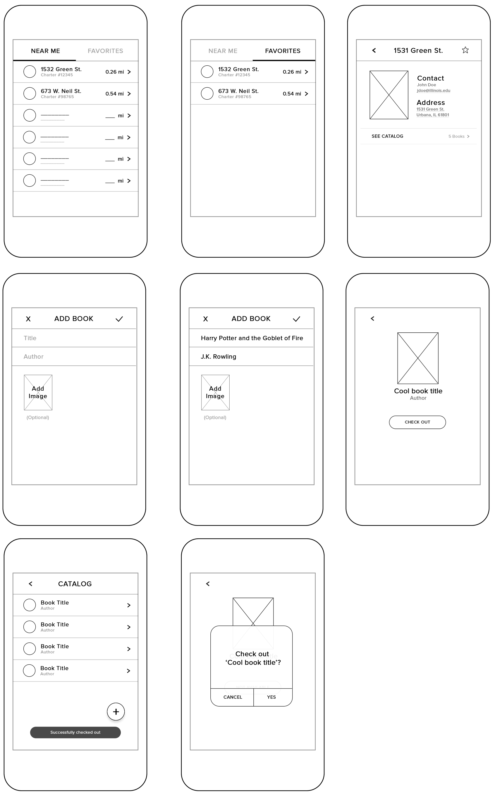
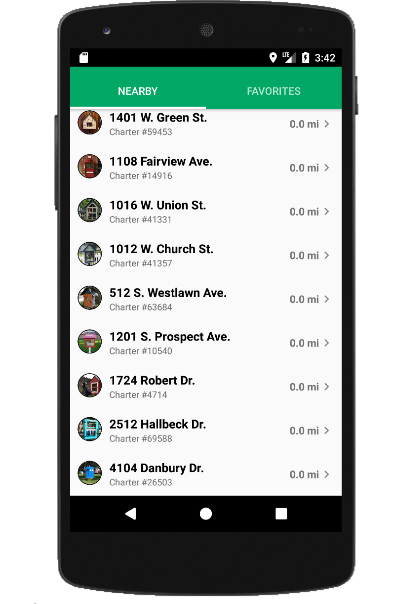
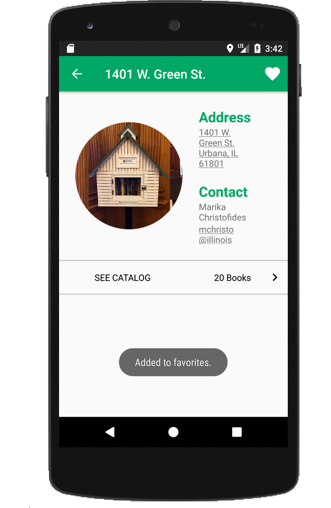
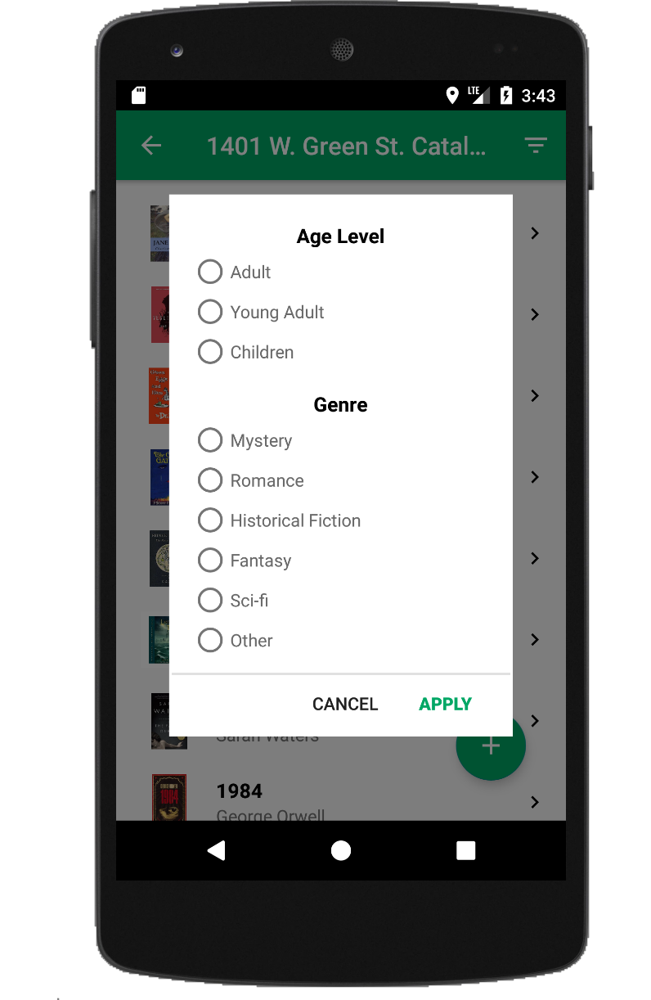

Fall 2018 • CS 465 (User Interface Design)
#School #Java #Android Studio #Wireframing #Prototyping
Description
Little Free Library is a nonprofit organization that fosters book sharing and exchanges through registered bookcases around the world. In order to increase accessibility and visibility of the books to potential users, we created a platform and inventory system for the LFLs in the Champaign-Urbana area that allowed people to catalog their exchanges and see what books are currently available around them.
Responsibilities
▶ Responsible for wireframing and prototyping, creating logo
▶ Worked in Android Studio for mobile app development
▶ Helped with research and conducting face-to-face user testing with functional prototype
— Watch Pitch Video
Logo made in Photoshop
Example wireframe screens that were employed for user testing
  Example final screens